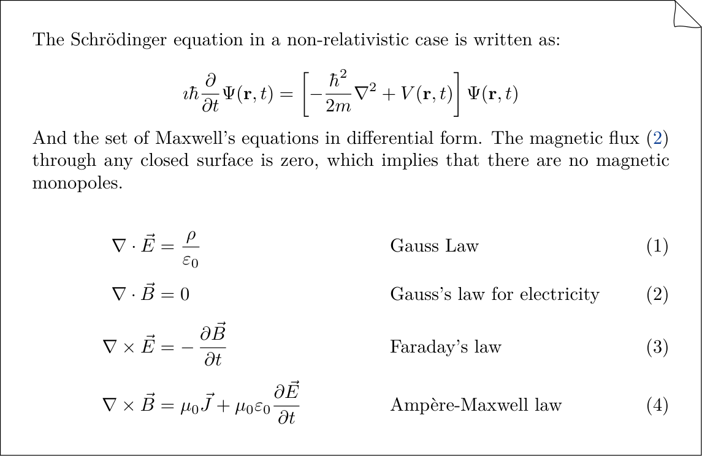

Math Extension¶
LaTeX is the gold standard for math notation. TeXSmith relies on the same syntax that MathJax/Arithmatex understand.
Inline Math¶
Inline math is $ ... $. GitHub renders it natively, so it is the canonical
spelling; \( ... \) is accepted as a compatibility layer for LaTeX habits.
The quadratic formula is given by $x = \frac{-b \pm \sqrt{b^2 - 4ac}}{2a}$,
or \(x = \frac{-b \pm \sqrt{b^2 - 4ac}}{2a}\) in the LaTeX-flavoured form.
Rendered as:
The quadratic formula is given by \(x = \frac{-b \pm \sqrt{b^2 - 4ac}}{2a}\) or \(x = \frac{-b \pm \sqrt{b^2 - 4ac}}{2a}\).
Note
Skip the spaces right after $ or \(—they confuse the parser.
Block Math¶
Simple equations¶
Example: Schrödinger’s equation in the non-relativistic case:
$$
\imath \hbar \frac{\partial}{\partial t} \Psi(\mathbf{r},t) =
\left[ -\frac{\hbar^2}{2m} \nabla^2 + V(\mathbf{r},t) \right] \Psi(\mathbf{r},t)
$$
Multiple equations¶
$$
\begin{align*}
\nabla \cdot \vec{E} &= \frac{\rho}{\varepsilon_0} \quad &&\text{Gauss Law}\\[4pt]
\nabla \cdot \vec{B} &= 0 \quad &&\text{Gauss's law for electricity}\\[4pt]
\nabla \times \vec{E} &= -\,\frac{\partial \vec{B}}{\partial t}
\quad &&\text{Faraday's law}\\[4pt]
\nabla \times \vec{B} &= \mu_0 \vec{J} + \mu_0 \varepsilon_0
\frac{\partial \vec{E}}{\partial t}
\quad &&\text{Ampère-Maxwell law}
\end{align*}
$$
Numbered equation¶
The canonical spelling attaches an anchor to the display block, Quarto-style,
and refers to it with @:
$$
R_{\mu \nu} - \frac{1}{2} R g_{\mu \nu} + \Lambda g_{\mu \nu} =
\frac{8 \pi G}{c^4} T_{\mu \nu}
$$ {#eq:gravity}
@eq:gravity describes the fundamental interaction of gravitation as a result of
spacetime being curved by matter and energy.
Equations take an anchor but no caption line: print never captions them.
The LaTeX-flavoured form — \begin{equation}...\end{equation} (or equation*)
with \label, referenced with $\eqref{...}$ — keeps working as a
compatibility layer. Example: the relativistic gravitational field equation:
The equation $\eqref{eq:gravity}$ describes the fundamental interaction of
gravitation as a result of spacetime being curved by matter and energy.
$$
\begin{equation} \label{eq:gravity}
R_{\mu \nu} - \frac{1}{2} R g_{\mu \nu} + \Lambda g_{\mu \nu} =
\frac{8 \pi G}{c^4} T_{\mu \nu}
\end{equation}
$$
The equation \(\eqref{eq:gravity}\) describes the fundamental interaction of gravitation as a result of spacetime being curved by matter and energy.
In an aligned environment, you can number individual lines using the \label{} command:
As we see in $\eqref{eq:max2}$, the magnetic flux through any closed surface is zero;
this implies that there are no magnetic monopoles.
$$
\begin{align}
\oint_{\partial V} \vec{E} \cdot d\vec{S} &= \frac{Q_{\text{int}}}{\varepsilon_0}
\label{eq:max1} \\[6pt]
\oint_{\partial V} \vec{B} \cdot d\vec{S} &= 0 \label{eq:max2} \\[6pt]
\oint_{\partial S} \vec{E} \cdot d\vec{\ell} &= -\,\frac{d}{dt} \int_{S} \vec{B}
\cdot d\vec{S} \label{eq:max3} \\[6pt]
\oint_{\partial S} \vec{B} \cdot d\vec{\ell} &= \mu_0 I_{\text{int}}
+ \mu_0 \varepsilon_0 \frac{d}{dt} \int_{S} \vec{E} \cdot d\vec{S} \label{eq:max4}
\end{align}
$$
As we see in \(\eqref{eq:max2}\), the magnetic flux through a closed surface is zero, implying the lack of magnetic monopoles.
MkDocs Configuration¶
Running under MkDocs? Enable Arithmatex/MathJax and let it handle numbering:
markdown_extensions:
- pymdownx.arithmatex:
generic: true
extra_javascript:
- js/mathjax.js
- https://unpkg.com/mathjax@3/es5/tex-mml-chtml.js
In the js/mathjax.js file, include the following MathJax configuration:
window.MathJax = {
tex: {
inlineMath: [['\\(', '\\)']],
displayMath: [['$$', '$$'], ['\\[', '\\]']],
tags: 'ams',
packages: {'[+]': ['ams']}
},
options: {
ignoreHtmlClass: '.*',
processHtmlClass: 'arithmatex'
}
};
With LaTeX output¶
Here’s what the above snippets look like once rendered through TeXSmith:

With the source:
The Schrödinger equation in a non-relativistic case is written as:
$$
\imath \hbar \frac{\partial}{\partial t} \Psi(\mathbf{r},t) =
\left[ -\frac{\hbar^2}{2m} \nabla^2 + V(\mathbf{r},t) \right] \Psi(\mathbf{r},t)
$$
And the set of Maxwell's equations in differential form. The magnetic flux $\eqref{eq:max2}$ through any closed surface is zero, which implies that there are no magnetic monopoles.
$$
\begin{align}
\nabla \cdot \vec{E} &= \frac{\rho}{\varepsilon_0} \quad &&\text{Gauss Law}\\[4pt]
\nabla \cdot \vec{B} &= 0 \quad &&\text{Gauss's law for electricity} \label{eq:max2}\\[4pt]
\nabla \times \vec{E} &= -\,\frac{\partial \vec{B}}{\partial t}
\quad &&\text{Faraday's law}\\[4pt]
\nabla \times \vec{B} &= \mu_0 \vec{J} + \mu_0 \varepsilon_0
\frac{\partial \vec{E}}{\partial t}
\quad &&\text{Ampère-Maxwell law}
\end{align}
$$